HERO PROJECT 01 · Web Tool
morph lab.
자연의 형태 변화를 시각 언어로 사용한 그래픽 실험실
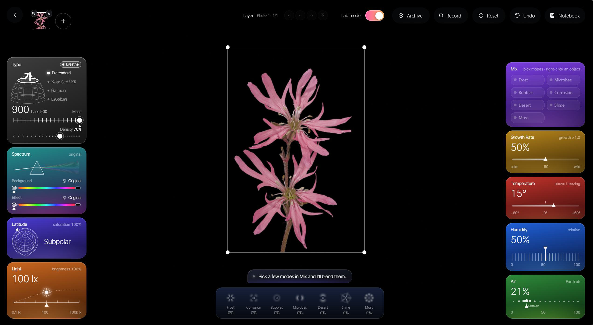
사진 한 장을 실험대 위에 올리고, 온도·습도·빛·공기 같은 조건을 바꾸면 이미지가 얼고, 자라고, 부식된다.
morph lab.은 결빙·미생물·이끼·점액·거품·사막화·부식 — 일곱 가지 자연현상을 그래픽 규칙으로 옮긴 웹 실험실이다. 사용자는 정답을 고르는 대신 조건을 조절하며 형태가 변해가는 과정을 관찰하고, 마음에 드는 순간을 아카이브와 실험노트에 기록한다.
[ 작업 핵심 설명 — 초안. 직접 다듬기 ]
01 — Seven Modes
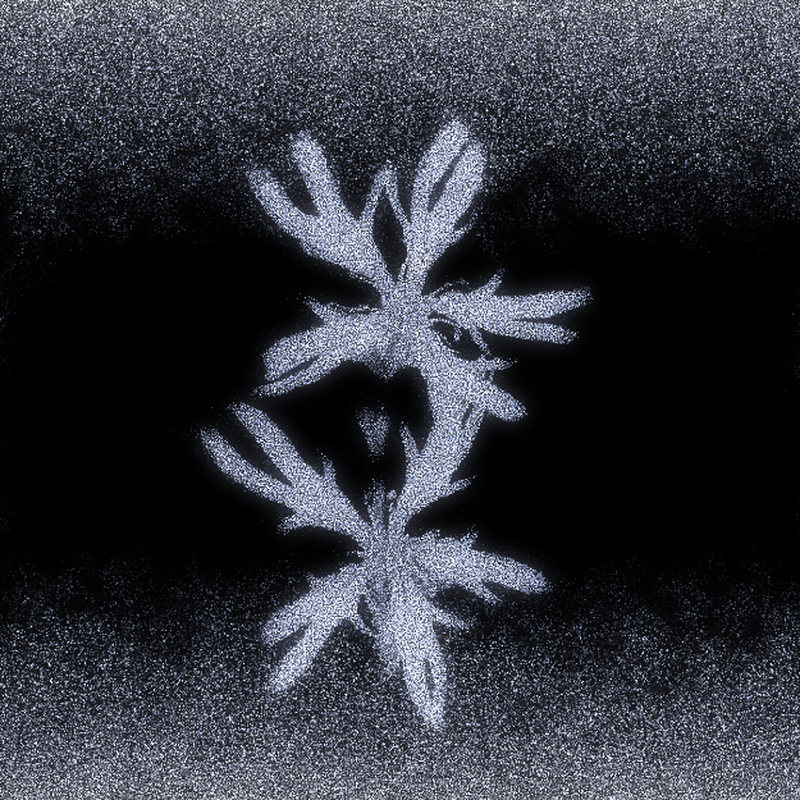
Frost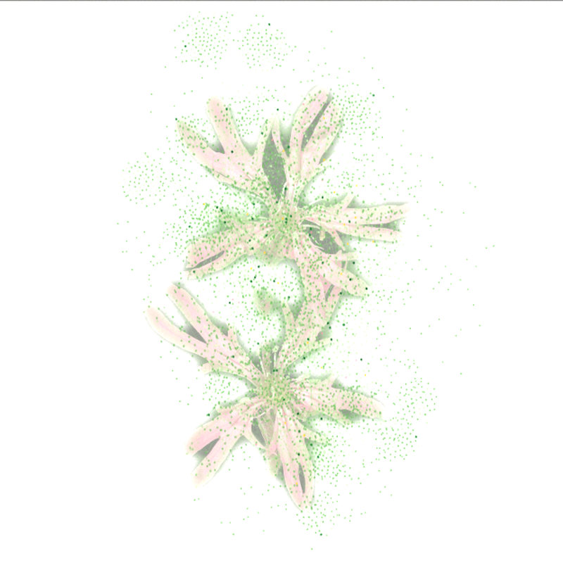
Microbe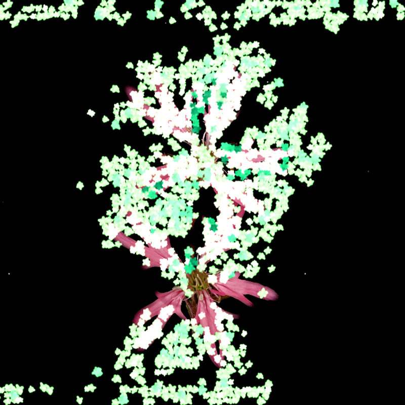
Moss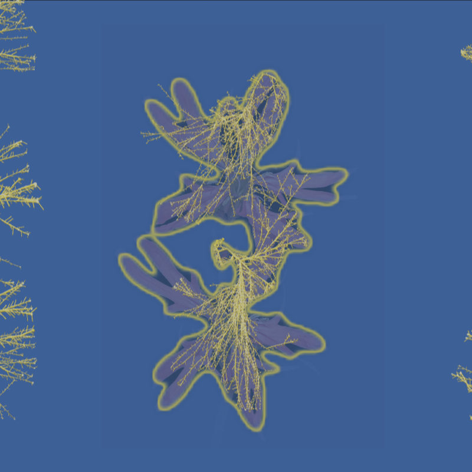
Slime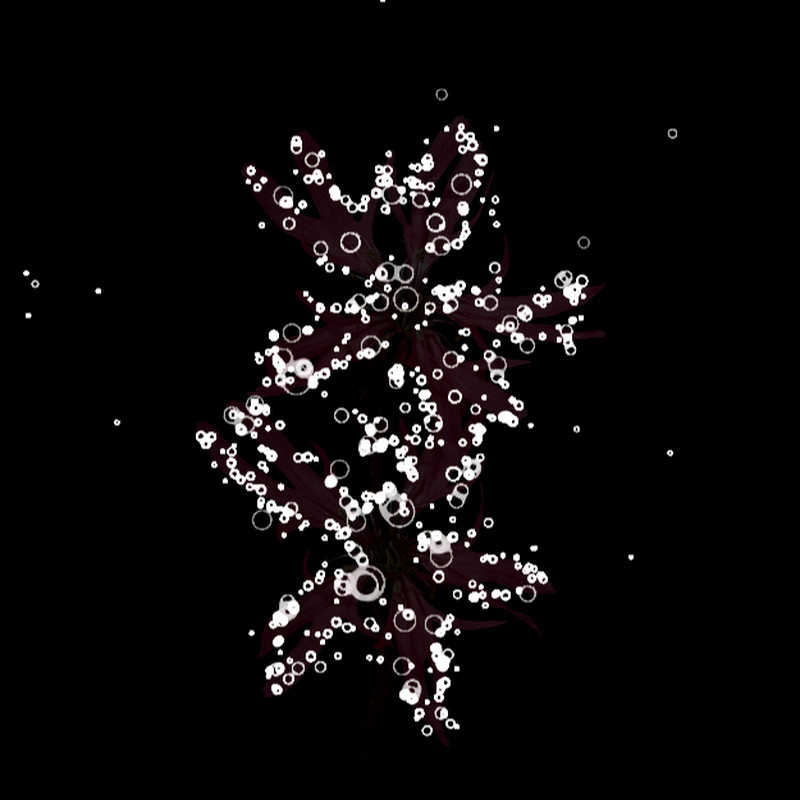
Bubble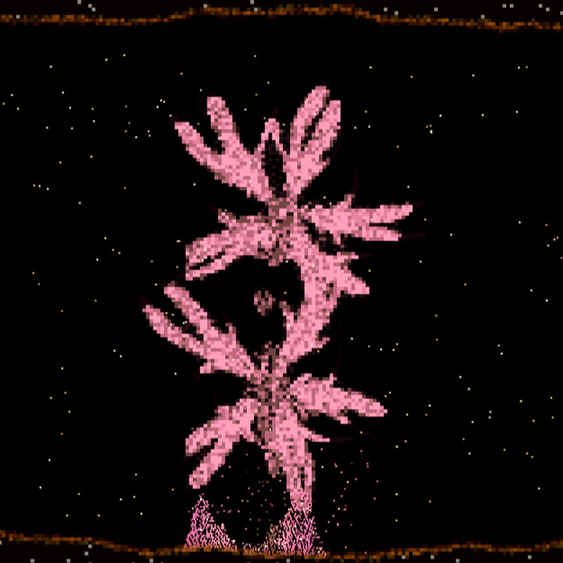
Desert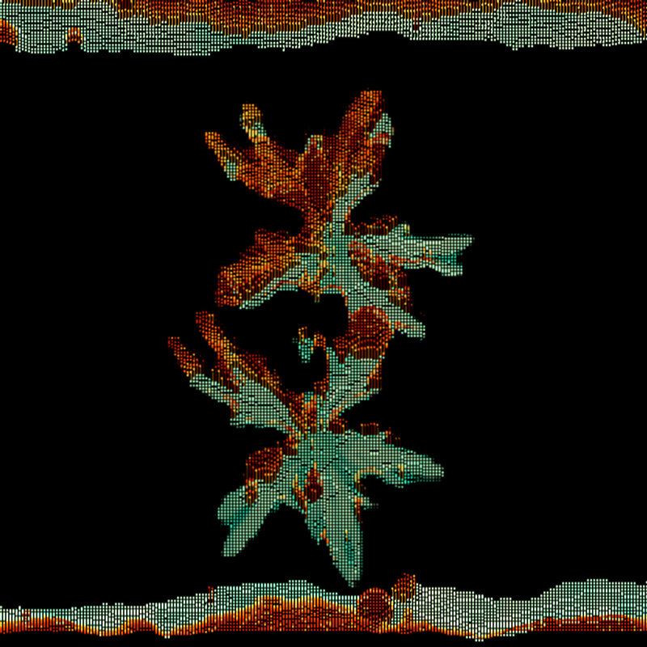
Corrode
02 — Lab Mode
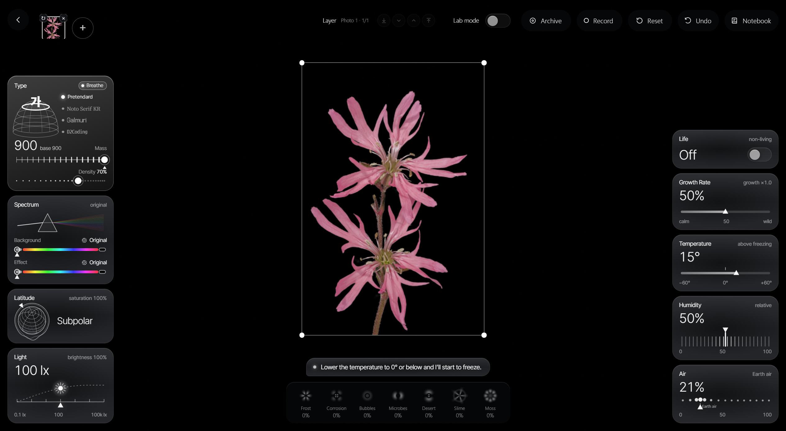
Lab Mode — 여러 모드를 섞어 새로운 현상을 만든다.
03 — Process
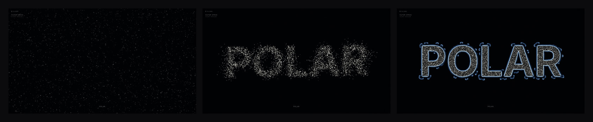
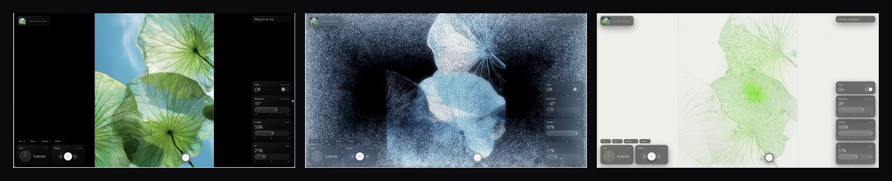